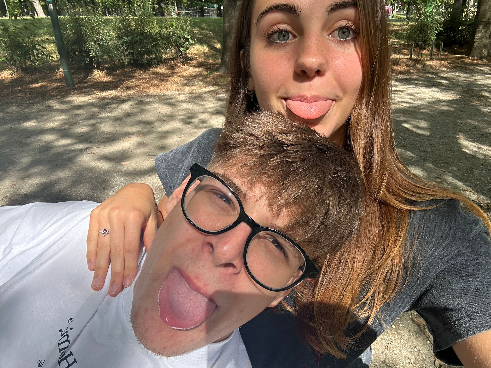
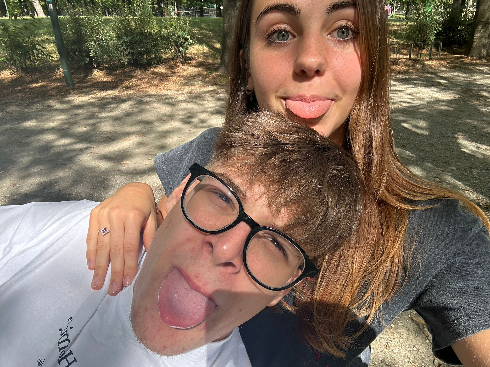
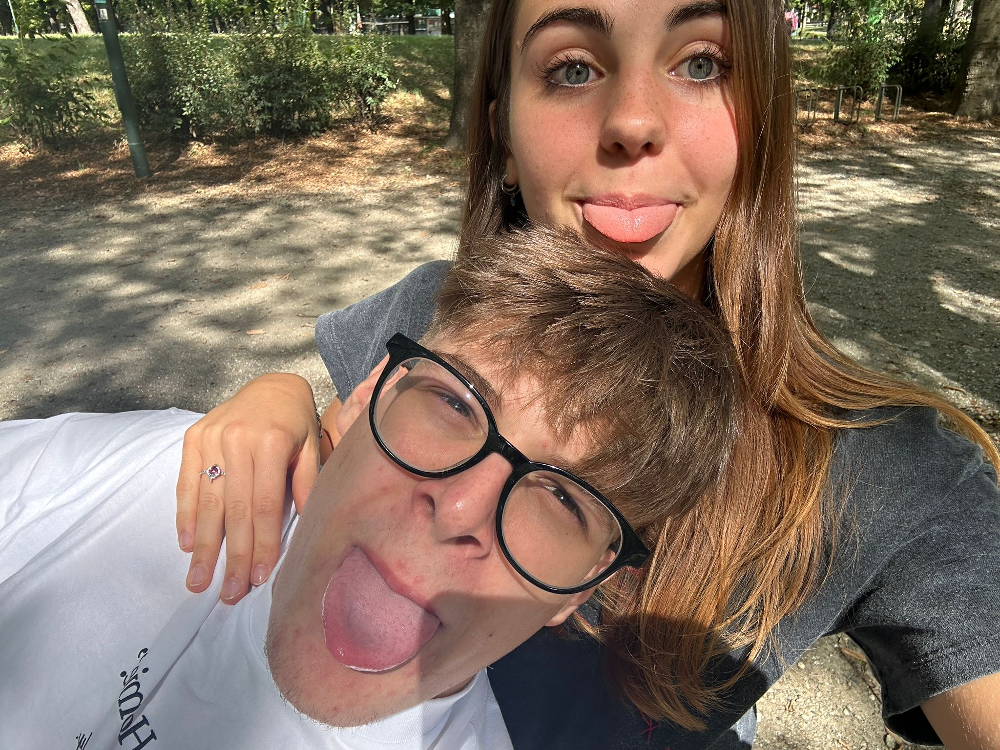

273 giorni che ti amo, 273 giorni che passo a pensarti, 273 giorni che porterò sempre con me nel cuore💓

Ti amo amoreeee mio, sei davvero MAGNIFICA, stupenda davvero, ti adoro con tutto me stesso💙
💗 Sei la parte più bella dei miei giorni 💗
Per te, amore mio 💕
Ehi amore mio,
Hai trovato questa letterina (che poi non era così segreta..).
L’ho scritta per ricordarti ancora una volta quanto ti amo e quanto tu sei speciale
per me, ossia tantissimissimissimissimo.
Tu sai che sei davvero fantastica? Sei la ragazza più dolce,
gentile, fantastica, intelligente, bella, stupenda, meravigliosa,
unica, speciale, incredibile, adorabile, carina, simpatica, chef fantastica,
bravissima negli sport e in tutto, resterei qui ed userei tutte le parole del mondo
e comunque non basterebbero per descriverti, talmente sei unica.
Vai oltre le parole, oltre la voce, oltre tutto, persino oltre
il mio pensiero e me stesso.
Amo ogni tuo modo di essere, fare, parlare, sorridere..
tutti unici, impossibili da descrivere ma che amo con tutto il mio cuore,
mente, anima, con tutto me stesso. 💙
Mi fai sentire il ragazzo più fortunato al mondo a conoscerti e ad avere una ragazza
come te nella mia vita, sei tutto ciò che io potessi mai desidera ed anche molto di più.
Penso che conoscerti sia stato un evento che ha cambiato gli ultimi mesi e che ne cambierÃ
altrettanti da qui in avnti, sperando siano infiniti questi mesi insieme, perchè sarebbero
i mesi di una vita unica, che rivivrei ad ogni singolo giorno, ripetendo ogni mia singola scelta
sapendo che mi avrebbe portato a te, un vero e proprio tesoro, segreto della mia felicità .
In questo pensiero, in questa pagina, in questa lettera, in questo pezzo di
me che ti dono, c'è tutto il mio amore, un amore che è unicamente tuo e
che cresce ogni giorno, alimentato dalla tua presenza, dal tuo sorriso,
dalla tua voce, dai tuoi occhi e gesti, dai tuoi sentimenti, abbracci e baci.
Ho racchiuso in queste poche parole un qualcosa di indescrivibile, un sentimento
troppo forte per essere messo per iscritto, ma che spero tu possa sentire,
che tu possa provare e percepire il mio amore per te, ogni volta che
incrociamo lo sguardo, ogni volta che ti stringo forte, ogni volta che ti bacio,
ogni volta che leggerai questa lettera, ogni volta che riguarderai le nostre foto,
spero che tutto possa ricordarti dell'amore che provo nei tuoi confronti.💙💙

 
